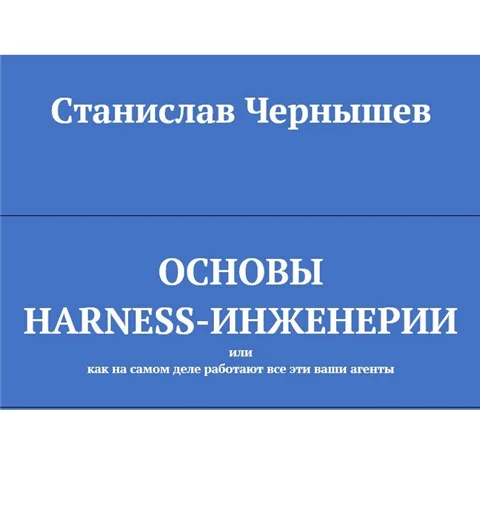
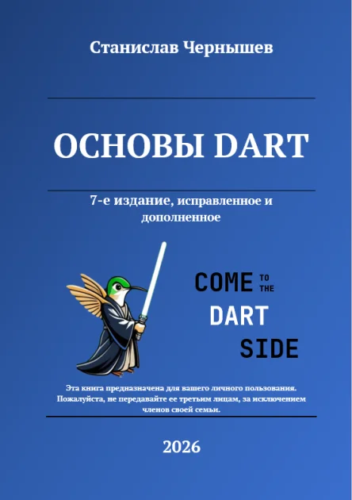
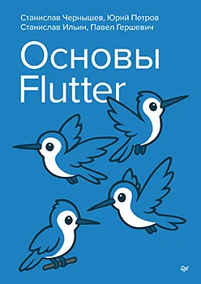
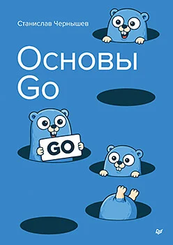
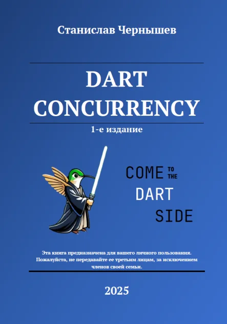
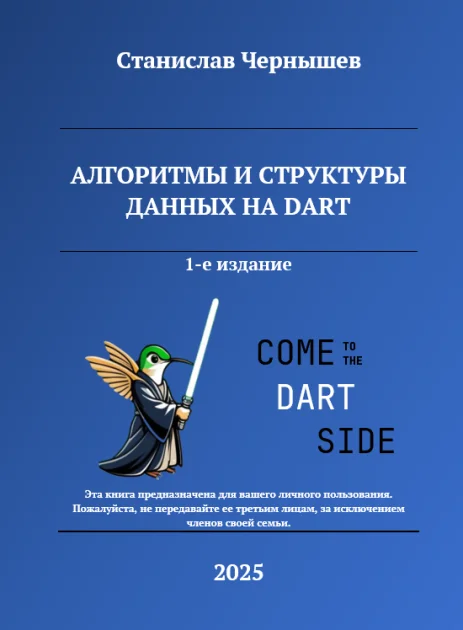

Основы harness-инженерии
Как с нуля спроектировать свой агентский харнесс, какие проблемы и нюансы ждут на этом пути и лучшие практики
кандидат технических наук, доцент · автор книг по harness-инженерии, Dart, Go и Flutter
Всем привет!
Меня зовут Станислав Чернышев. Я автор учебной литературы по ИТ-тематике, тг-канала «MADTeacher», спикер конференций, участник ПК Crossconf и FlutterConf. Моя основная деятельность – наука и преподавание. Есть степень кандидата технических наук. Работаю на должности доцента в Санкт-Петербургском государственном университете аэрокосмического приборостроения.
За спиной более 10 лет в IT: работа в сфере ВПК, разработка различных проектов на заказ, управление командой разработчиков, пару выгораний и, само собой, преподавание. Мне нравится обучать, и, чего уж там скрывать – я просто в бешенстве от сложившейся ситуации в сфере образования…
Этот проект – один из маленьких шагов в попытке склонить чашу весов так, чтобы мои ученики и студенты выходили на рынок труда с актуальным набором компетенций. А также один из способов поддержания преподских штанов. Мной выбран другой путь – пилить востребованный контент, который будет полезен как бывалым, так и начинающим инженерам и используется на моих занятиях в ВУЗе.
Почему большая часть книг платная? Годы работы «за спасибо» научили ценить свой труд, к тому же имеется серия книг «Community edition», доступ к которым предоставляется совершенно бесплатно.

Как с нуля спроектировать свой агентский харнесс, какие проблемы и нюансы ждут на этом пути и лучшие практики

Бестселлер мира Dart на просторах РФ и СНГ. Бумажное издание – в «Питере», бесплатная Community-редакция и актуальная электронная версия – на Boosty

Авторы: С. Чернышев (идейный вдохновитель и технический редактор), Ю. Петров, С. Ильин, П. Гершевич. Печатная книга – в «Питере», полная версия – с курсом на Stepik

История создания языка, его синтаксис и основные нюансы, встроенные типы данных и т. д.

Асинхронность, изоляты, параллелизм и внутрянка DartVM

Классические алгоритмы и структуры данных на Dart
Классические алгоритмы и структуры данных на Go
путь джедая →
Программа курсов «Основы Dart» для сильной базы по языку: базовый синтаксис, продвинутые возможности и ограничения, несколько сквозных проектов
Алгоритмы и структуры данных с реализацией на Dart, а также паттерны проектирования GoF
Конкурентное программирование на Dart: Future, Stream, Isolate. Электронная версия книги «Dart Concurrency»
отдельные квесты:
Электронная версия пишущейся книги. Разбираем, как устроена «упряжь» большой языковой модели и почему именно она определяет, насколько полезным получится агент. Курс пополняется по мере выхода новых глав
Stepik ↗Практика, тесты и реальный проект – Тетрис, который прокачивается от версии v0 до полноценного приложения с анимацией, сетью и локализацией
Stepik ↗Основы, структуры, интерфейсы и конкурентность на практике
Stepik ↗Каждый курс дублирует книгу практикой: тесты, задания и проекты. Учиться можно с нуля – путь расписан по шагам.
Полный список с выходными данными – в профиле автора на eLibrary.
@madteacher_channel
Мысли по творящемуся в образовании, мире IT и dart/flutter. Анонсы стримов, созвонов сообщества и новости об обновлении книг
Бесплатные книги серии Community Edition, ранний доступ к главам, закрытый чат, видео и способы поддержать мои преподавательские штаны =)
Станислав [MADTeacher] Чернышев
190+ видео: уроки по Dart и Flutter, доклады с конференций, стримы и куда же без разговоров про ИИ
кодgithub.com/MADTeacher
Мой GitHub-репозиторий